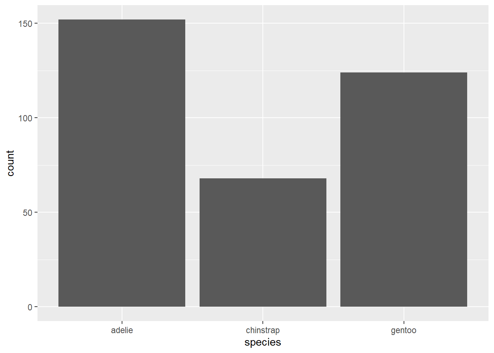
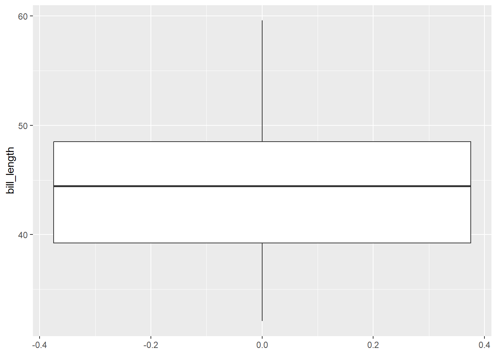
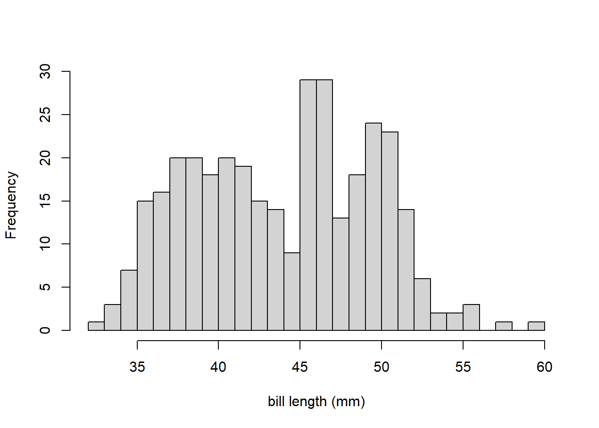
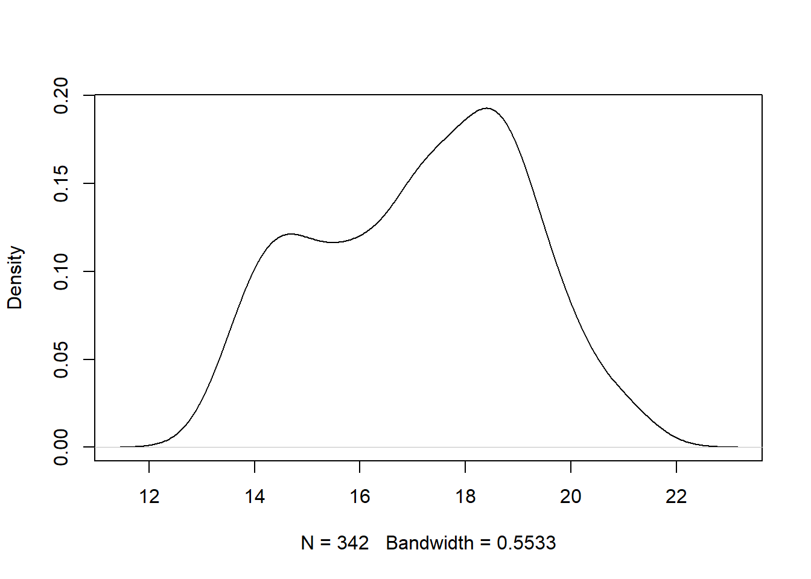
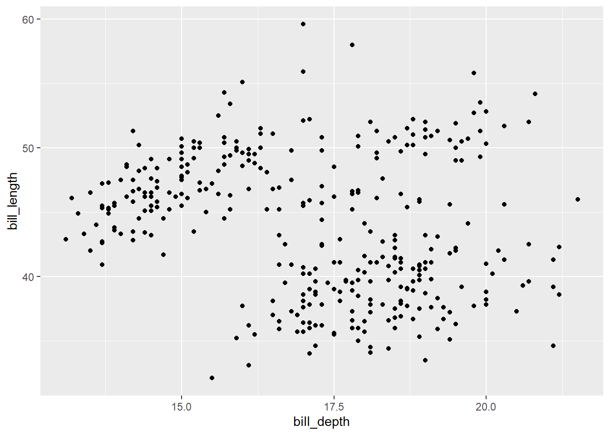
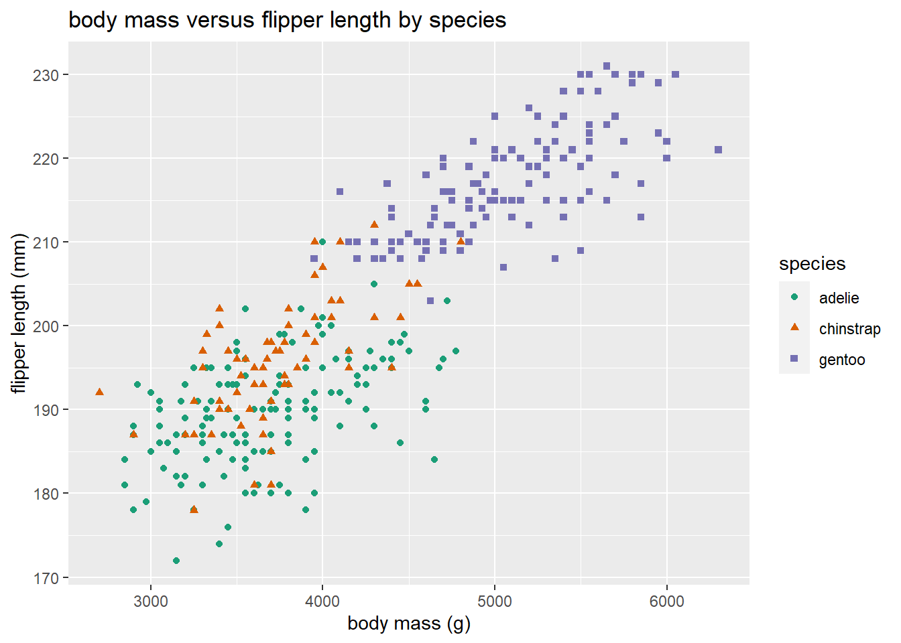
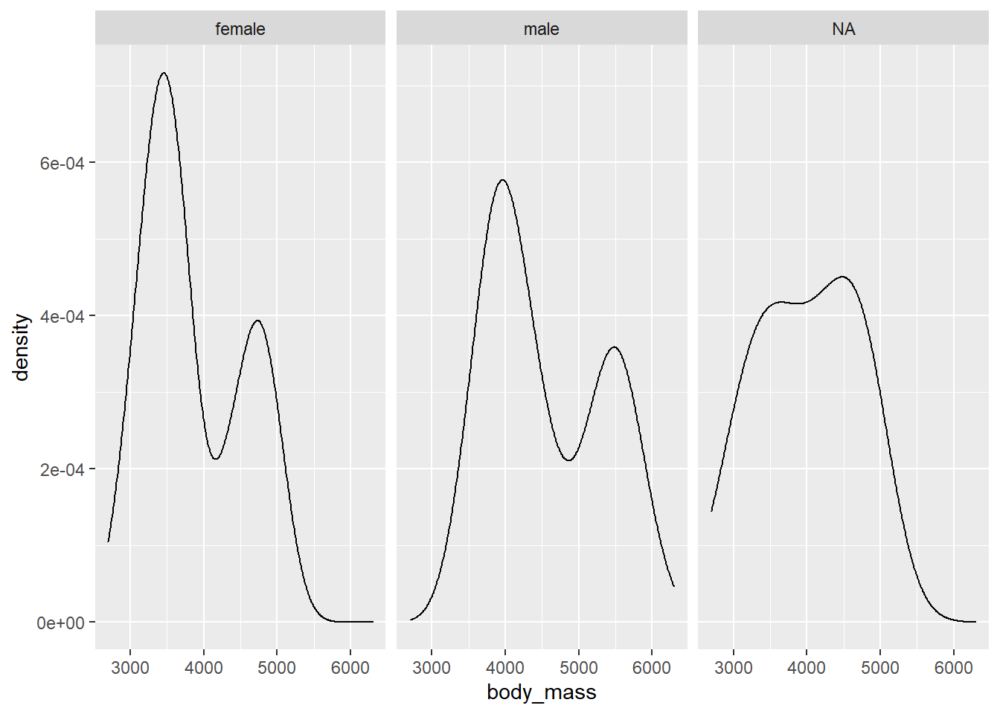

Chapter 2 Data cleaning and exploration
You should explore every data set numerically and visually prior to modeling it. The data exploration process will aid you in finding errors in your data, locating missing values, identifying outliers and unusual observations, finding patterns in your data, deciding on a modeling approach, etc.
In order to properly explore the data, it is likely that you will need to prepare the data. Many data sets are initially poorly structured, have store the variables with an as an inappropriate data type, have poor variable names, etc. The process of preparing the data into a friendly format is known as “cleaning”.
A systematic exploration of the data is essential to performing a correct analysis. We will demonstrate a systematic (but not exhaustive) exploration of the penguins_raw data set from the palmerpenguins package (Horst, Hill, and Gorman 2022).
For brevity, we exclude some of the code output in analysis that follows. The excluded portion will be noted with ....
2.1 Raw Palmer penguins data
A data set in a package can be loaded into memory using the data function, specifying the name of the data set to be loaded, and specifying the package that contains the data. We do this for the penguins_raw data below.
data(penguins, package = "palmerpenguins")This command actually loads two data sets: penguins_raw, the data set we will be looking at, and penguins, a simplified version of penguins_raw. Note that this particular data set loads in a nonstandard way; we would normally expect to load the penguins_raw data using data(penguins_raw, package = "palmerpenguins").
We could have also loaded the data set by running the following commands in the Console.
library(palmerpenguins)
data(penguins)This second approach is overkill and loads everything the package includes into memory. If you are going to be using many functions or objects from a package, then the second approach is sensible. Otherwise, the first approach is more precise and is better coding practice.
The penguins_raw data set provides data related to various penguin species measured in the Palmer Archipelago (Antarctica), originally provided by Gorman, Williams, and Fraser (2014).
The data set includes 344 observations of 17 variables. The variables are:
studyName: acharactervariable indicating the expedition from which the data were collected.Sample Number: anumericvariable denoting the continuous number sequence for each sample.Species: acharactervariable indicating the penguin species.Region: acharactervariable denoting the region of the Palmer LTER sampling grid the sample was obtained.Island: acharactervariable indicating the island on which the penguin was observed.Stage: acharactervariable indicating the reproductive stage of the observation.Individual ID: acharactervariable indicating the unique identification number for each individual in the data set.Clutch Completion: acharactervariable indicating whether the study nest was observed with a “full clutch” of 2 eggs.Date Egg: aDatevariable indicating the date that the study nest was observed with 1 egg.Culman Length (mm): anumericvariable indicating the length of the dorsal ridge of the penguin’s bill in millimeters.Culmen Depth (mm): anumericvariable indicating the indicating the depth of the dorsal ridge of the penguin’s bill in millimeters.Flipper Length (mm): anumericvariable indicating the penguin’s flipper length in millimeters.Body Mass (g): anumericvariable indicating the penguin’s body mass in grams.Sex: acharactervariable indicating the penguin’s sex (FEMALE,MALE)Delta 15 N (o/oo): anumericvariable indicating the ratio of stable isotopes 15N:14N.Delta 13 C (o/oo): anumericvariable indicating the ratio of stable isotopes 15C:12C.Comments: acharactervariable providing additional information about the observation.
2.2 Initial data cleaning
The str function is a great first function to apply on a newly loaded data set that you aren’t familiar with because it provides a general overview of the data’s structure.
str(penguins_raw, give.attr = FALSE)
## tibble [344 × 17] (S3: tbl_df/tbl/data.frame)
## $ studyName : chr [1:344] "PAL0708" "PAL0708" "PAL0708" "PAL0708" ...
## $ Sample Number : num [1:344] 1 2 3 4 5 6 7 8 9 10 ...
## $ Species : chr [1:344] "Adelie Penguin (Pygoscelis adeliae)" "Adelie Penguin (Pygoscelis adeliae)" "Adelie Penguin (Pygoscelis adeliae)" "Adelie Penguin (Pygoscelis adeliae)" ...
## $ Region : chr [1:344] "Anvers" "Anvers" "Anvers" "Anvers" ...
## $ Island : chr [1:344] "Torgersen" "Torgersen" "Torgersen" "Torgersen" ...
## $ Stage : chr [1:344] "Adult, 1 Egg Stage" "Adult, 1 Egg Stage" "Adult, 1 Egg Stage" "Adult, 1 Egg Stage" ...
## $ Individual ID : chr [1:344] "N1A1" "N1A2" "N2A1" "N2A2" ...
## $ Clutch Completion : chr [1:344] "Yes" "Yes" "Yes" "Yes" ...
## $ Date Egg : Date[1:344], format: "2007-11-11" ...
## $ Culmen Length (mm) : num [1:344] 39.1 39.5 40.3 NA 36.7 39.3 38.9 39.2 34.1 42 ...
## $ Culmen Depth (mm) : num [1:344] 18.7 17.4 18 NA 19.3 20.6 17.8 19.6 18.1 20.2 ...
## $ Flipper Length (mm): num [1:344] 181 186 195 NA 193 190 181 195 193 190 ...
## $ Body Mass (g) : num [1:344] 3750 3800 3250 NA 3450 ...
## $ Sex : chr [1:344] "MALE" "FEMALE" "FEMALE" NA ...
## $ Delta 15 N (o/oo) : num [1:344] NA 8.95 8.37 NA 8.77 ...
## $ Delta 13 C (o/oo) : num [1:344] NA -24.7 -25.3 NA -25.3 ...
....We see that the penguins_raw object is a tibble, a special kind of data frame provided by the tibble package (Müller and Wickham 2022) as part of the broader tidyverse. It has 344 rows and 17 columns. In general, a tibble will function like a standard data frame, though its behavior may change when tidyverse packages are loaded. In the code below, we confirm that penguins_raw qualifies as a base R data.frame.
is.data.frame(penguins_raw)
## [1] TRUEAn alternative to str is the glimpse function from the dplyr package. dplyr::glimpse also summarizes the structure of an object, but also automatically formats the printed output to the size of the Console to make it more readable. An example is provided below.
dplyr::glimpse(penguins_raw)
## Rows: 344
## Columns: 17
## $ studyName <chr> "PAL0708", "PAL0708", "PAL07…
## $ `Sample Number` <dbl> 1, 2, 3, 4, 5, 6, 7, 8, 9, 1…
## $ Species <chr> "Adelie Penguin (Pygoscelis …
## $ Region <chr> "Anvers", "Anvers", "Anvers"…
## $ Island <chr> "Torgersen", "Torgersen", "T…
## $ Stage <chr> "Adult, 1 Egg Stage", "Adult…
## $ `Individual ID` <chr> "N1A1", "N1A2", "N2A1", "N2A…
## $ `Clutch Completion` <chr> "Yes", "Yes", "Yes", "Yes", …
## $ `Date Egg` <date> 2007-11-11, 2007-11-11, 200…
## $ `Culmen Length (mm)` <dbl> 39.1, 39.5, 40.3, NA, 36.7, …
## $ `Culmen Depth (mm)` <dbl> 18.7, 17.4, 18.0, NA, 19.3, …
## $ `Flipper Length (mm)` <dbl> 181, 186, 195, NA, 193, 190,…
## $ `Body Mass (g)` <dbl> 3750, 3800, 3250, NA, 3450, …
## $ Sex <chr> "MALE", "FEMALE", "FEMALE", …
## $ `Delta 15 N (o/oo)` <dbl> NA, 8.94956, 8.36821, NA, 8.…
## $ `Delta 13 C (o/oo)` <dbl> NA, -24.69454, -25.33302, NA…
## $ Comments <chr> "Not enough blood for isotop…Another thing that we notice about penguins_raw is that it has terrible variable names. The variable names have a mixture of lowercase and uppercase letters, parentheses, and even spaces! This makes it complicated to access variables in the data frame. To access the flipper length variable, we would have to use something like the command below. Note the ` ` around “Flipper Length (mm)” because of the spaces in the variable name.
penguins_raw$`Flipper Length (mm)`
## [1] 181 186 195 NA 193 190 181 195 193 190 186 180 182
## [14] 191 198 185 195 197 184 194 174 180 189 185 180 187
## [27] 183 187 172 180 178 178 188 184 195 196 190 180 181
## [40] 184 182 195 186 196 185 190 182 179 190 191 186 188
## [53] 190 200 187 191 186 193 181 194 185 195 185 192 184
....In The tidyverse style guide (Wickham 2022c), Hadley Wickham recommends:
Variable and function names should use only lowercase letters, numbers, and _. Use underscores (_) (so called snake case) to separate words within a name.
We will apply this recommendation to the penguins_raw data below.
Additionally, many variables will be extraneous for our future analyses, so we will select only the ones that we will use in the future. We the subset function to select the Species, Island, Culmen Length (mm), Culmen Depth (mm), Flipper Length (mm), Body Mass (g), and Sex variables of penguins_raw and assign the subsetted data frame the name penguins_clean.
# select certain columns of penguins_raw, assign new name
penguins_clean <-
penguins_raw |>
subset(select = c("Species", "Island", "Culmen Length (mm)", "Culmen Depth (mm)", "Flipper Length (mm)", "Body Mass (g)", "Sex"))To rename the columns of penguins_clean, we use the names function to access the column names of the data frame and replace it with a vector containing the desired column names. A second usage of names confirms that the data frame now has improved column names.
# access column names and replace with new names
names(penguins_clean) <- c("species", "island", "bill_length", "bill_depth", "flipper_length", "body_mass", "sex")
# look at new column names
names(penguins_clean)
## [1] "species" "island" "bill_length"
## [4] "bill_depth" "flipper_length" "body_mass"
## [7] "sex"There are still some issues with penguins_clean. The most notable issues are that the species, island, and sex variables are categorical, but are represented as character vectors. These variables should each be converted to a factor. We use the transform function to convert the each variable to a factor. Notice that we must replace the original penguins_clean object with the transformed object using the assignment operator. We then run the str function to confirm the structure change occurred.
# convert sex variable to factor, replace original object
penguins_clean <-
penguins_clean |>
transform(species = factor(species), island = factor(island), sex = factor(sex))
# view structure
str(penguins_clean)
## 'data.frame': 344 obs. of 7 variables:
## $ species : Factor w/ 3 levels "Adelie Penguin (Pygoscelis adeliae)",..: 1 1 1 1 1 1 1 1 1 1 ...
## $ island : Factor w/ 3 levels "Biscoe","Dream",..: 3 3 3 3 3 3 3 3 3 3 ...
## $ bill_length : num 39.1 39.5 40.3 NA 36.7 39.3 38.9 39.2 34.1 42 ...
## $ bill_depth : num 18.7 17.4 18 NA 19.3 20.6 17.8 19.6 18.1 20.2 ...
## $ flipper_length: num 181 186 195 NA 193 190 181 195 193 190 ...
## $ body_mass : num 3750 3800 3250 NA 3450 ...
## $ sex : Factor w/ 2 levels "FEMALE","MALE": 2 1 1 NA 1 2 1 2 NA NA ...Our conversion of species, island, and sex to factor variables was successful. However, we notice that the levels of sex are MALE and FEMALE, which is visually unappealing. Also, the levels of species are extremely long, which can create formatting challenges. We simplify both below. First, we confirm the factor levels of the two variables.
# determine levels of species and sex
levels(penguins_clean$species)
## [1] "Adelie Penguin (Pygoscelis adeliae)"
## [2] "Chinstrap penguin (Pygoscelis antarctica)"
## [3] "Gentoo penguin (Pygoscelis papua)"
levels(penguins_clean$sex)
## [1] "FEMALE" "MALE"We now change the levels of each variable in the same order they are printed above and confirm that the changes were successful.
# update factor levels of species and sex
levels(penguins_clean$species) <- c("adelie", "chinstrap", "gentoo")
levels(penguins_clean$sex) <- c("female", "male")
# confirm that changes took effect
str(penguins_clean)
## 'data.frame': 344 obs. of 7 variables:
## $ species : Factor w/ 3 levels "adelie","chinstrap",..: 1 1 1 1 1 1 1 1 1 1 ...
## $ island : Factor w/ 3 levels "Biscoe","Dream",..: 3 3 3 3 3 3 3 3 3 3 ...
## $ bill_length : num 39.1 39.5 40.3 NA 36.7 39.3 38.9 39.2 34.1 42 ...
## $ bill_depth : num 18.7 17.4 18 NA 19.3 20.6 17.8 19.6 18.1 20.2 ...
## $ flipper_length: num 181 186 195 NA 193 190 181 195 193 190 ...
## $ body_mass : num 3750 3800 3250 NA 3450 ...
## $ sex : Factor w/ 2 levels "female","male": 2 1 1 NA 1 2 1 2 NA NA ...Our initial data cleaning process is now completed. As we explore our data further, it may become clear that additional data cleaning is needed.
2.3 Numerical summarization of data
Numerical exploration of a data set generally consists of computing various relevant statistics for each of the variables in a data set in order to summarize the data. A relevant statistic will depend on the type of data being analyzed.
Table 2.1 provides an overview of common numerical summaries used to explore data, the type of data that can be summarized, what is summarized, and the function to compute the summary.
| numeric summary | variable type | summarizes | R function |
|---|---|---|---|
| mean |
numeric
|
center |
mean
|
| median |
numeric
|
center |
median
|
| variance |
numeric
|
spread |
var
|
| standard deviation |
numeric
|
spread |
sd
|
| interquartile range |
numeric
|
spread |
quantile (modified)
|
| quantiles |
numeric
|
center and spread |
quantile
|
| correlation |
numeric
|
similarity |
cor
|
| frequency distribution |
factor
|
counts |
table
|
| relative frequency distribution |
factor
|
proportions |
table (modified)
|
We provide additional explanation about the numeric summaries in what follows.
2.3.1 Numeric data
Numerical exploration of a set of numeric values usually focuses on determining the:
- center
- spread
- quantiles (less common).
It can also be useful to compute the correlation between two numeric variables.
2.3.1.1 Measures of center
The sample mean and median are the most common statistics used to represent the “center” of a set of numeric values.
The sample mean or average is obtained by adding all values in the sample and dividing by the number of observations. The sample mean is the most commonly used measure of center. A weakness of the sample mean is that it is easily affected by outliers (values that are very large or small compared to the rest of the data values). Formally, if \(x_1, x_2, \ldots, x_n\) are a sample of \(n\) numeric values, then the sample mean is computed as \[\bar{x} = \frac{1}{n}\sum_{i=1}^n x_i.\] The sample mean can be computed in R using mean.
The sample median is the middle value of an ordered set of values (the actual middle value for when the number of values is odd and the average of the two middle values if there are an even number of values). Alternatively, the median is identical to the 0.5 quantile of the data. The median is considered more “resistant” because it is not so greatly affected by outliers. The median of the values 1, 8, 7, 6, 100 is 7. The median of the values 1, 8, 7, 6, 100, 4 is 6.5. The median can be computed in R using median.
We compute the mean of the body_mass variable of the penguins_clean data in the code below.
mean(penguins_clean$body_mass)
## [1] NAWhy is the result NA instead of a number? In general, an NA value “poisons” any calculation it is part of, with the function returning NA. Even a single NA value will cause a calculation to return NA, even if there are thousands or millions of non-NA values. If you want to compute the sample mean of the non-NA values, then you must change the na.rm argument of mean to TRUE, which makes the mean function to temporarily remove NAs prior to calculation. The na.rm argument is provided in many other functions, as we’ll see in subsequent examples. We now compute the sample mean and median of the body_mass variable in penguins_clean, ignoring NA values.
# compute sample mean and median body_mass, ignoring NAs
mean(penguins_clean$body_mass, na.rm = TRUE)
## [1] 4201.754
median(penguins_clean$body_mass, na.rm = TRUE)
## [1] 4050We see the that average penguin body_mass is approximately 4201 grams, while the median value is 4050 grams. Since the median is less than the mean (i.e., large values are pulling the mean in the positive direction) the data may be positively skewed, but we will need to look at a histogram or density plot of the data to be sure (these plots are discussed in Sections 2.4.2.3 and 2.4.2.4).
2.3.1.2 Quantiles
We introduce quantiles before spread because we refer to quantiles in the discussion of spread.
Informally, the pth quantile (where \(0\leq p \leq 1\)) of a set of values is the value that separates the smallest \(100 p\)% of the values from the upper \(100(1-p)\)% of the values. e.g., the 0.25 sample quantile (often called Q1) of a set of values is the value that separates the smallest 25% of the values from the largest 75% of the values.
The quantile function is used to compute sample quantiles. There are actually many competing approaches to computing sample quantiles (which we don’t discuss or worry about). Run ?quantile in the Console if you are interested in learning more about the approaches used by R.
Quantiles are useful quantifying both the center (median) and spread (minimum and maxmimum or interquartile range) of a set of values.
We use the quantile function to compute the minimum (0 quantile), Q1 (0.25 quantile), median (0.5 quantile), Q3 (0.75 quantile), and maximum (1 quantile) of body_mass in the code below. The desired quantiles are provided as a numeric vector to the probs argument.
quantile(penguins_clean$body_mass, probs = c(0, 0.25, 0.5, 0.75, 1),
na.rm = TRUE)
## 0% 25% 50% 75% 100%
## 2700 3550 4050 4750 6300We see that the smallest and largest body masses are 2700 grams and 6300 grams, so the range of the data is \(6300 - 2700 = 3600\) grams. Q1 is 3550 grams, while Q3 is 4750 grams. Since Q3 and the maximum are further from the median than Q1 and the minimum, respectively, this is additional evidence that this variable may be positively skewed (stretched out in the postive direction), but we really need to visualize the data to confirm this.
2.3.1.3 Measures of spread
In addition to identifying the center of a set of values, it is important to measure their spread, i.e., how variable the values are.
The sample variance and standard deviation are the most common measures of spread for numeric values. The sample variance of a set of values is the (approximate) average of the squared deviation of each observation from the sample mean, i.e., the sample variance is \[s^2 = \frac{1}{n-1}\sum_{i=1}^n (x_i - \bar{x})^2.\] The sample standard deviation is the square root of the sample variance and is generally a more useful measure of spread because it is has the same units as the original data. The larger the standard deviation or variance of a set of values, the more they vary from their sample mean. The sample standard deviation and variance can be greatly affected by outliers. The var function computes the sample variance while sd computes the sample standard deviation.
The interquartile range is a more resistant measure of spread based on quantiles. The interquartile range is the difference between the 0.75 and 0.25 quantiles of a data set.
The minimum and maximum (in relation to the sample mean or median) can also be used to ascertain the spread of a data set. The minimum and maximum values are computed using the min and max functions, respectively.
We compute these measures of spread for the body_mass variable below.
# sample variance
var(penguins_clean$body_mass, na.rm = TRUE)
## [1] 643131.1
# sample standard deviation
sd(penguins_clean$body_mass, na.rm = TRUE)
## [1] 801.9545
# interquartile range (names = FALSE removes text above the results)
quantile(penguins_clean$body_mass, probs = 0.75,
na.rm = TRUE, names = FALSE) -
quantile(penguins_clean$body_mass, probs = 0.25,
na.rm = TRUE, names = FALSE)
## [1] 1200
# minimum
min(penguins_clean$body_mass, na.rm = TRUE)
## [1] 2700
# maximum
max(penguins_clean$body_mass, na.rm = TRUE)
## [1] 6300The sample variance of body_mass is 643131.1 grams^2, which isn’t easy to interpret. The sample standard deviation is almost 802 grams. So the “typical” deviation of a body_mass value from the sample mean is about 800 grams. The interquartile range is 1200 grams. The minimum and maximum values match what we saw the Section 2.3.1.2.
2.3.1.4 Correlation
The correlation between two numeric variables quantifies the strength and direction of their linear relationship. The most common correlation statistic is Pearson’s correlation statistic. If \(x_1, x_2, x_n\) and \(y_1, y_2, \ldots, y_n\) are two sets of numeric values, then the sample correlation statistic is computed as \[r = \frac{1}{n-1}\sum_{i=1}^n\left(\frac{x_i - \bar{x}}{s_x}\right)\left(\frac{y_i - \bar{y}}{s_y}\right),\] where \(\bar{x}\) and \(s_x\) denote the sample mean and standard deviation of the \(x\)’s with \(\bar{y}\) and \(s_y\) denoting the same thing for the \(y\)’s. \(r\) must be between -1 and 1. The cor function can be used to compute the sample correlation between two numeric variables.
The closer \(r\) is to -1 or 1, the closer the data values fall to a straight line when we plot \((x_i, y_i)\), \(i=1,2,\ldots,n\) in a scatter plot (discussed in Section ). Values close to 0 indicate that there is no linear relationship between the two variables. Negative \(r\) values indicate a negative relationship between the two variables (as values for one variable increase, the values for the other variable tend to decrease). Positive \(r\) values indicate a positive linear relationship between the two variables (as values for one variable increase, the values of the other variable also tend to increase).
In the code below, we compute the sample correlation between all numeric variables in penguins_clean. We set use = "pairwise.complete.obs" so that all non-NA pairs of values are used in the calculation.
# determine whether each variable is numeric
num_col <- unlist(lapply(penguins_clean, is.numeric))
# observe results
num_col
## species island bill_length bill_depth
## FALSE FALSE TRUE TRUE
## flipper_length body_mass sex
## TRUE TRUE FALSE
# compute correlation of numeric variables
cor(penguins_clean[, num_col], use = "pairwise.complete.obs")
## bill_length bill_depth flipper_length
## bill_length 1.0000000 -0.2350529 0.6561813
## bill_depth -0.2350529 1.0000000 -0.5838512
## flipper_length 0.6561813 -0.5838512 1.0000000
## body_mass 0.5951098 -0.4719156 0.8712018
## body_mass
## bill_length 0.5951098
## bill_depth -0.4719156
## flipper_length 0.8712018
## body_mass 1.0000000Commenting on the output, we see that the values of each variable are perfectly correlated with themselves (this is always true since the values in each pairs are identical). The correlation between bill_length and body_mass is 0.87, so the larger a penguin is, the larger its bill tends to be. Perhaps surprisingly, the correlation between bill_length and bill_depth is -0.24, so the longer a bill becomes, the shallower (narrower) we expect the depth to be. Similarly, the correlation between bill_depth and body_mass is -0.47, so larger penguins tend to have narrower bills.
We briefly explain why we didn’t simply use the cor function on penguins_clean directly. If we try to use cor on penguins_clean naively, then R will return an error because not all variables in penguins_clean are numeric. To account for this, we create a vector that determines whether a variable in penguins_clean is numeric. Recall that a data.frame object is a specially-structured list object, with each variable being an element of the list. The lapply function applies a function (is.numeric in this case) to each element of the supplied list. In our case, we use this to determine whether each variable is numeric. The result is returned as a list, so we use the unlist function to simplify the list to a vector.
2.3.2 Categorical data
The statistics mentioned in the previous section are generally not appropriate for a categorical variable. Instead, a frequency distribution or relative frequency distribution might be a useful numeric summary of categorical data.
The table function returns a contingency table summarizing the number of observations having each level. Note that by default, the table ignores NA values.
We see that for the sex variable, there are 165 female penguins and 168 male penguins.
table(penguins_clean$sex)
##
## female male
## 165 168To count the NA values (if present), we can set the useNA argument of table to "ifany".
We see that 11 of the observations had no available information on sex.
table(penguins_clean$sex, useNA = "ifany")
##
## female male <NA>
## 165 168 11A relative frequency distribution summarizes the proportion or percentage of observation with each level of a categorical variable. To compute the relative frequency distribution of a variable, we must divide the frequency distribution by the number of observations. If you want to ignore NAs, then you can use the following code, which takes the frequency distribution of sex and divides by the number of non-NA sex values.
# divide the frequence distribution of sex by the number of non-NA values
table(penguins_clean$sex)/sum(!is.na(penguins_clean$sex))
##
## female male
## 0.4954955 0.5045045We see that slightly under 50% of the sex values are female (not accounting for NA values) are just over 50% are male.
Are you wondering what sum(!is.na(penguins_clean$sex)) is doing in the code above? The is.na function returns a TRUE for each value that is NA but otherwise returns FALSE. The ! in front of is.na inverts the logical expression so that we are determining whether each value is NOT an NA (and returns TRUE if the value is not NA). It is common in programming associated TRUE with 1 and FALSE with 0. So if we sum the the values that are not NA, that is equivalent to counting the number of non-NA observations.
If we want to include the NA values in our table, we can use the code below.
table(penguins_clean$sex, useNA = "ifany")/length(penguins_clean$sex)
##
## female male <NA>
## 0.47965116 0.48837209 0.03197674We do not know the sex of approximately 3% of the penguins observations.
2.3.3 The summary function
The summary function provides a simple approach for quickly quantifying the center and spread of each numeric variable in a data frame or determining the frequency distribution of a factor variable. More specifically, the summary function will compute the minimum, 0.25 quantile, mean, median, 0.75 quantile, and maximum value of a numeric variable and will return the frequency distribution (including NA values) of factor variable.
A summary method is available for a data.frame object, which means that we can apply the summary function directly to our penguins_clean data frame, which we do so below.
summary(penguins_clean)
## species island bill_length
## adelie :152 Biscoe :168 Min. :32.10
## chinstrap: 68 Dream :124 1st Qu.:39.23
## gentoo :124 Torgersen: 52 Median :44.45
## Mean :43.92
## 3rd Qu.:48.50
## Max. :59.60
## NA's :2
## bill_depth flipper_length body_mass
## Min. :13.10 Min. :172.0 Min. :2700
## 1st Qu.:15.60 1st Qu.:190.0 1st Qu.:3550
## Median :17.30 Median :197.0 Median :4050
## Mean :17.15 Mean :200.9 Mean :4202
## 3rd Qu.:18.70 3rd Qu.:213.0 3rd Qu.:4750
## Max. :21.50 Max. :231.0 Max. :6300
## NA's :2 NA's :2 NA's :2
## sex
## female:165
## male :168
## NA's : 11
##
##
##
## We conveniently get a numeric summary of all of the variables in our data set (you will see different results for variables that are not factor or numeric type). The summary function all makes it easy to identify the presence of any NAs in a variable.
2.4 Visual summaries of data
Visual summaries (i.e., plots) of data are vital to understanding your data prior to modeling. They help us to spot errors in our data, unusual observations, and simple patterns. They are also important after modeling to communicate the results of your analysis.
We will introduce basic visualization approaches using base R functions as well as the popular ggplot2 package (Wickham, Chang, et al. 2022). It is important to know the basic plotting capabilities of base R (particularly the plot function, which has been extended by many packages to provide standard plots for complex objects produced by those packages). However, ggplot2 is able to produce complex graphics with automated legends in a consistent, systematic way, which provides it advantages over base graphics in many contexts.
Table 2.2 provides an overview of different plots types that can be used to summarize data, the type of data being summarized, whether the plot is for univariate (one variable), bivariate (two variable), or multivariate (3 or more variables) data, the base R functions create the plot, and the main ggplot2 functions need to create the plot. The table is not intended to be an exhaustive list of useful graphics you should use for data exploration.
| plot type | variable types | number of variables | base R | ggplot2 |
|---|---|---|---|---|
| box plot |
numeric
|
univariate |
boxplot
|
geom_boxplot
|
| histogram |
numeric
|
univariate |
hist
|
geom_histogram
|
| density plot |
numeric
|
univariate |
plot, density
|
geom_density
|
| bar plot |
factor
|
univariate |
plot or barplot, table
|
geom_bar
|
| scatter plot |
2 numeric
|
bivariate |
plot
|
geom_point
|
| parallel box plot |
1 numeric, 1 factor
|
bivariate |
plot or boxplot
|
geom_boxplot
|
| grouped scatter plot |
2 numeric, 1 factor
|
multivariate |
plot
|
geom_point
|
| facetted plots | mixed | multivariate | none |
facet_wrap or facet_grid
|
| interactive plots | mixed | multivariate | none |
plotly::ggplotly
|
2.4.1 The ggplot recipe
There are 4 main components needed to produce a graphic using ggplot2.
- A data frame containing your data.
- Each column should be a variable and each row should be an observation of data.
- A
ggplotobject.- This is initialized using the
ggplotfunction.
- This is initialized using the
- A geometric object.
- These are called “geoms” for short.
- geoms indicate the geometric object used to visualize the data. E.g., points, lines, polygons etc. More generally, geoms indicate the type of plot that is desired, e.g., histogram, density, or boxplot, which aren’t exactly a simple geometric argument.
- An aesthetic.
- An aesthetic mapping indicates what role a variable plays in the plot.
- e.g., which variable will play the “x” variable in the plot, the “y” variable in the plot, control the “color” of the observations, etc.
We add “layers” of information to a ggplot, such as geoms, scales, or other customizations, using +.
2.4.2 Univariate plots
A univariate plot is a plot that only involves a single variable. Examples include bar plots, boxplots, histograms, density plots, dot plots, pie charts, etc. (the last two are are generally poor choices.)
2.4.2.1 Bar plots
A bar plot (or bar chart) displays the number or proportion of observations in each category of a categorical variable (or using R terminology, each level of a factor variable).
What are you looking for? Generally, categories that have substantially more or fewer observations than the other categories.
The simplest way to create a bar plot in base R is using the plot function on a factor. In the code below, we create a bar plot for the island variable of penguins_clean. We use the main argument to add a title to the plot.
plot(penguins$island, main = "distribution of island")
We see that the largest number of penguins were obserevd on Biscoe allowed, followed by Dream and Torgersen islands, respectively.
Alternatively, we can combine barplot with the table function. We do so below for the sex variable. To account for NAs in the sex variable, we specify useNA = "ifany" in the table function. Also, we specify names.arg = ... to specify the bar names, otherwise the bar for NA will be blank.
barplot(table(penguins_clean$sex, useNA = "ifany"),
names.arg = c("female", "male", "NA"))
We see that that there are slightly more male than female penguins, with a handful of observations missing this characteristic.
To create a relatively frequency bar plot, we should divide the results of table by the number of relevant observations. For this particular example, we could use the code below. We use the length function to determine the number of observations to divide the counts with.
barplot(table(penguins_clean$sex, useNA = "ifany") /
length(penguins_clean$sex),
names.arg = c("female", "male", "NA"))
To create a bar plot with ggplot2, we first create a basic ggplot object containing our data. Make sure to load the ggplot2 package prior to creating the plot, otherwise you’ll get errors!
# load ggplot2 package
library(ggplot2)
# create generic ggplot object with our data
gg_penguin <- ggplot(data = penguins_clean)gg_penguin is a minimal ggplot object with the raw information needed to produce future graphics. To create a bar plot, we add the geom geom_bar and map the species variable (in this example) to the x aesthetic using the aes function.
# create bar plot for species variable
gg_penguin + geom_bar(aes(x = species))
2.4.2.2 Box plots
A box plot is a simple graphic showing critical quantiles of a numeric variable, as well as outliers. A box plot indicates the median, 0.25 quantile (Q1), 0.75 quantile (Q3), and extend bars to the largest and smallest observations that are not outliers. Outliers are usually marked with starts or dots. The standard definition of an outlier in the context of box plots is an value that is more than Q3 + 1.5 (Q3 - Q1) and less than Q1 - 1.5 (Q3 - Q1). The box of a box plot extends from Q1 to Q3, with a line in the box indicating the median.
Box plots are useful for identifying outliers and skewness in the variable. However, box plot throw away a lot of information, so be cautious in making conclusions about skewness and modality without seeking a histogram or density plot of the data.
The boxplot function is the easiest approach for producing a box plot using base R. We do so for the body_mass variable below.
boxplot(penguins_clean$body_mass, data = penguins_clean,
main = "distribution of body mass")
The body_mass variable doesn’t have any outliers. It’s has perhaps a slight positive skew since the upper tail and upper part of the box are longer than the lower tail and lower part of the box. The median value is a bit larger than 4000 grams, while 50% of the data being between approximatly 3500 and 4750 grams (i.e., between Q1 and Q3).
To create a box plot using ggplot2, we use geom_boxplot. We create a box plot for the bill_length variable below. We map bill_length to the y aesthetic so that we get a vertically-oriented box plot (mapping it to x will produce a horizontal box plot).
gg_penguin + geom_boxplot(aes(y = bill_length))
## Warning: Removed 2 rows containing non-finite values
## (`stat_boxplot()`).
There are not bill_length outliers. The minimum value is approximately 32 mm and the maximum is almost 60 mm. Q1 is approximately 39 mm, the median is approximately 44 mm, and Q3 is approximately 48 mm. It is difficult to assess the skewness of this data. The upper tail is longer than the shorter tail, but the upper box is shorter than the lower box, so the evidence is inconsistent.
2.4.2.3 Histograms
A histogram displays the distribution of a numeric variable. A histogram counts the number of values falling into (usually) equal-sized “bins” running from the smallest value to the largest value. The number of bins and width of the bins affect the shape of the histogram.
Histograms are used to assess skewness, modality (the number of clear “peaks” in the plot), and to some extent, outliers.
The hist function is used create a histogram of a numeric variable. We augment the information already learned about bill_length with a histogram in the code below.
hist(penguins_clean$bill_length)
The title and x-axis label are visually unappealling, so we use the main and xlab arguments to change them to nothing (i.e., no title) and bill length (mm). We also increase the number of bins using the breaks argument.
hist(penguins_clean$bill_length, main = "",
xlab = "bill length (mm)", breaks = 20)
This distribution of bill_length is bimodal (has two prominent peaks or modes). That is why the skewness information on the box plot of bill_length was inconsistent. This also demonstrates why should should never draw conclusions like modality or skewness from numeric summaries alone.
We use geom_histogram to create a histogram using ggplot2, mapping the variable to the x aesthetic. We do so for the flipper_length variable below.
gg_penguin + geom_histogram(aes(x = flipper_length))
## `stat_bin()` using `bins = 30`. Pick better value with
## `binwidth`.
## Warning: Removed 2 rows containing non-finite values
## (`stat_bin()`).
Flipper length is also bimodal, with prominent peaks approximately centered around 190 and 220 mm.
2.4.2.4 Density plots
A density plot is similar to a smoothed histogram and the area under the smoothed curve must equal 1. In general, density plots are more visually appealing than histograms, but both communicate similar information. However, density plots can sometimes have problems near the edges of a variable with a fixed upper or lower bound because it is difficult to know how to smooth the data in that case.
The plot and density function can be combined to construct a density plot using base R. We do that below for the bill_depth variable below. Note the use of na.rm to remove NA that would otherwise poison the density calculation, and use main to have a blank title.
plot(density(penguins_clean$bill_depth, na.rm = TRUE), main = "")
The bill_depth variable is bimodal with peaks around 14 mm and 18 mm. The graphic also indicates that 342 observations were used to estimate the density and the bandwidth parameter was 0.5533. The bandwidth parameter controls the amount of smoothing and can be changed. Run ?stats::density in the Console for more details.
We create a density plot with ggplot2 using geom_density. We do so for the body_mass variable, mapping it to the x aesthetic.
gg_penguin + geom_density(aes(x = body_mass))
## Warning: Removed 2 rows containing non-finite values
## (`stat_density()`).
The body_mass variable is unimodal, with a peak around 3700 grams. It is also positively skewed.
2.4.3 Bivariate plots
A bivariate plot is a plot involving two variables. A bivariate plot can involve more than one data type.
2.4.3.1 Scatter plots
Scatter plots can be used to identify the relationship between two numeric variables.
We use the plot function to create a scatter plot of bill_length versus body_mass (the y variable versus the x variable) using base R below. The plot function is very flexible and can be used multiple ways to produce a scatter plot, but we will use the formula method that takes a formula describing the variables (y ~ x) and the data frame from which the variables come.
# xlab and ylab are used to customize the x-axis and y-axis labels
plot(bill_length ~ body_mass, data = penguins_clean,
xlab = "body mass (g)", ylab = "bill length (mm)")
There is a positive linear relationship between body_mass and bill_length. As body_mass increases, bill_length tends to increase.
The geom_point function can be used to create a scatter plot with ggplot2. we make the variables to be plotted to the x and y aesthetics. We create a scatter plot of bill_length versus bill_depth.
gg_penguin + geom_point(aes(x = bill_depth, y = bill_length))
## Warning: Removed 2 rows containing missing values
## (`geom_point()`).
It’s difficult to make any definitive conclusion about the relationship of these two variables from this plot, as the plot is basically a blob of points.
2.4.3.2 Parallel box plots
A parallel box plot is used to display the distribution of a numeric variable whose values are grouped based on each level of a factor variable. Specifically, a box plot of the numeric variable is is constructed for all the values associated with the levels of the factor. Parallel box plot are useful for determining if the distribution of a numeric variable substantially changes based on whether an observation has a certain level of a factor.
Once again use the plot function with a formula, we can create a parallel box plot easily, with the syntax of the formula being numeric variable ~ factor variable (you can reverse these to change the box plot orientation). We parallel box plots of body_mass versus sex below.
plot(body_mass ~ sex, data = penguins_clean)
We can see that the body_mass values tend to be larger for the male penguins compared to the female penguins.
We can produce something similar with ggplot2 by specifying both the y and x aesthetics of for geom_boxplot. We do so below to compare bill_length for the different penguin species.
gg_penguin + geom_boxplot(aes(x = species, y = bill_length))
## Warning: Removed 2 rows containing non-finite values
## (`stat_boxplot()`).
From a quick glance, we are able to see from the graphic above that the chinstrap penguins tend to have slightly larger bill lengths compared to the gentoo penguins, which typically have larger bill lengths than the adelie penguins.
2.4.4 Multivariate plots
A multivariate plot displays relationships between 2 or more variables (so bivariate plots are technically multivariate plots). We focus on multivariate plots using ggplot2. While the same graphics can be created with base R, it is substantially quicker to create an initial version of multivariate graphics with ggplot2.
2.4.4.1 Grouped scatter plot
A grouped scatter plot is a scatter plot that uses colors or symbols (or both) to indicate the level of a factor variable that each point corresponds to. You can actually use more than one factor variable, but interpretation often becomes much more difficult. The most common way to create a grouped scatter plot with ggplot2 is to map a factor variable to the color or shape aesthetic of geom_point. ggplot2 will automatically map the factor variable to unique colors or shapes and then indicates the mapping in a legend (this process is known as “scaling”.
In the example below, we create a scatter plot of flipper_length versus body_mass that distinguishes the different species using color.
gg_penguin + geom_point(aes(x = body_mass, y = flipper_length,
color = species))
## Warning: Removed 2 rows containing missing values
## (`geom_point()`).
The flipper length and body mass of gentoo penguins tend to be noticeably larger than the other two species, and there is the cluster of gentoo penguis is noticeably different in the plot. Chinstrap and adelie penguins tend to have similar flipper length and body mass, with chinstrap penguins tending to have slightly longer flipper length.
The graphic above can be made better in two ways. 1. Using better colors, and 2. Using more than one visual approach to distinguishing the levels of a factor variable.
Color blindness is a common visual impairment. The colors used above use both red and green, which may be difficult to distinguish. We should use a more friendly color palette. An excellent resource for choosing a color palette is https://colorbrewer2.org (Brewer (2022)). The webpage allows you to choose a color palette based on certain desired characteristics such as whether the palette is colorblind-friendly, printer friendly, etc. The recommend palettes can be accessed using the scale_color_brewer function. We use colorblind-friendly palette below. We also added a few additional customizations below.
gg_penguin +
geom_point(aes(x = body_mass, y = flipper_length,
color = species, shape = species)) +
scale_color_brewer(type = "qual", palette = "Dark2") +
xlab("body mass (g)") + ylab("flipper length (mm)") +
ggtitle("body mass versus flipper length by species")
## Warning: Removed 2 rows containing missing values
## (`geom_point()`).
2.4.5 Facetted plots (and alternatives)
Facetting creates separate panels (facets) of plots based on one or more facetting variables. The key functions to do this with ggplot2 are the facet_grid and facet_wrap functions. facet_grid is used to create a grid of plots based on one or two factor variables, while facet_wrap wraps facets of panels around the plot. We
Below, we facet scatter plots of bill_length versus bill_depth by species.
gg_penguin +
geom_point(aes(x = bill_depth, y = bill_length)) +
facet_grid(~ species)
## Warning: Removed 2 rows containing missing values
## (`geom_point()`).
Whereas we previously couldn’t discern a relationship between bill length and depth based on a single scatter plot, facetting by species makes it clear there is a positive relationship between bill_length and bill_depth. We could have used a group scatter plot for the same thing.
A simpler facetting example would be to facet density plots of body_mass by sex as shown below.
gg_penguin + geom_density(aes(x = body_mass)) + facet_grid(~sex)
## Warning: Removed 2 rows containing non-finite values
## (`stat_density()`).
This plot is a bit difficult to interpret. We see that body mass is bimodal for the males and females. Perhaps this is related to species. Since the density plots are in different panels, its a bit tricky to see how they relate to each other. Also, the NA panel is probably not needed.
To get rid of the NA panel, we need to remove all of the observations with NA values. We do this below, using subset to select the desired columns and then using na.omit to remove any rows that have NA values for body_mass, sex, or species. Note that order matters here because na.omit removes any observation of the data frame that has an NA row. We save the filtered object as penguins_temp.
penguins_temp <-
penguins_clean |>
subset(select = c(body_mass, sex, species)) |>
na.omit()In the next plot, we create density plots of the body_mass variable. However, we use the fill aesthetic to scale the sex variable so that the we distinguish the densities of male and female penguins with different colors. We set the alpha argument to 0.5 OUTSIDE the aes function (because it is being manually specified) so that the colors are translucent and blend. We also facet by species to see what the patterns look like for the different species.
ggplot(data = penguins_temp) +
geom_density(aes(x = body_mass, fill = sex), alpha = 0.5) +
facet_grid(~ species)
We see that for all species, the body mass of the males tends to be larger than the females.
The examples above provide a small taste of the complicated graphics you can create with ggplot2 using only a few lines of code.
2.4.5.1 Interactive graphics
There are many tools for creating interactive graphics in R. We have found the ggiraph package (Gohel and Skintzos 2022) useful for creating interactive graphics based on ggplot2. However, it is a bit too complex to discuss here.
The plotly package (Sievert et al. 2022) is an R package to provide the capabilities of plotly https://plotly.com/, a well-known tool for creating interactive scientific plots. The ggplotly function will instantly make a ggplot interactive (though you may need to customize it for your needs). We provide two examples below.
First, we load the plotly package to have access to the ggplotly function. We then take our previous grouped scatter plot that plotted flipp_length versus body_mass distguishing by species and assign it the name ggi. We then use the ggplotly function in make the graphic interactive. When you hover over a point, the plot interactively provides the exact body_mass value, flipper_length value, and species of the observation.
# load plotly package
library(plotly)
##
## Attaching package: 'plotly'
## The following object is masked from 'package:ggplot2':
##
## last_plot
## The following object is masked from 'package:stats':
##
## filter
## The following object is masked from 'package:graphics':
##
## layout
# assign grouped scatter plot name
ggi <-
gg_penguin +
geom_point(aes(x = body_mass, y = flipper_length,
color = species, shape = species)) +
scale_color_brewer(type = "qual", palette = "Dark2") +
xlab("body mass (g)") + ylab("flipper length (mm)") +
ggtitle("body mass versus flipper length by species")
# make plot interactive
ggplotly(ggi)# assign parallel box plot name
ggi2 <-
gg_penguin +
geom_boxplot(aes(x = species, y = bill_length))
# make plot interactive
ggplotly(ggi2)
## Warning: Removed 2 rows containing non-finite values
## (`stat_boxplot()`).The interactive parallel box plot provides information about the box plot of each species (such as the minimum bill_length, Q1, median, Q3, etc.)
2.5 A plan for data cleaning and exploration
We have provides many examples of data cleaning and exploration using the penguins_raw data. The analysis above is NOT exhaustive, and there are many additional numeric and visual summaries we could consider. We summarize a basic plan below for initial data cleaning and exploration that we have found useful. You will likely augment this process based on your own preferences and things you learn from the data. We assume you are working with a data frame, which is the most common data structure used for data analysis in R.
- Import or the data set.
- Use the
strfunction to get an idea of the initial structure. This can help to identify clear issues you may have had in importing the data, problems with variable names and types, etc. - Clean the variable names based on your preferences.
- Convert the variables to the appropriate type (e.g., categorical variables to
factor). - Run the
summaryfunction on your data frame. Take note ofNAs, impossible values that are data entry errors, etc. Perhaps perform some additional cleaning based on this information. - Compute any additional numeric summaries of the different variables, as desired.
- Create univariate plots of all variables you are considering. Use histograms for discrete
numericvariables, density plots for continuousnumericvariables, and bar plots forfactorvariables. Take note of any interesting patterns such as modality, skewness, overall shape, outliers, etc. - Create bivariate plots of any pairs of variables. Use scatter plots for two
numericvariables. Use parallel boxplots fornumericandfactorvariables or perhaps create histogram plots of thenumericvariable facetted by thefactorvariable, or density plots of thenumericvariables filled with different colors by thefactorvariable. Once again, notice any patterns. - Create multivariate and interactive graphics based on what you learned in the previous steps.
2.6 Final notes on missing or erroneous data
What should you do with your data when observations are missing information or the information is clearly erroneous.
If the data are clearly erroneous, attempt to get the correct value. If the values cannot be corrected, replace them with NA since you don’t have that information.
What should you do about NAs. There are many approaches for dealing with NAs. The proper approach depends a lot on WHY the data are missing. Speaking informally, if there is not systematic reason why the data are missing, then ignoring the observations with missing data isn’t a terrible approach. However, if there is a systematic reason why the data are missing (such as individuals not wanting to answer a sensitive question, subjects dying for a specific reason) then ignoring that data can lead to erroneous conclusions.
In what follows, we will generally ignore missing data, assuming the problem is not systematic.